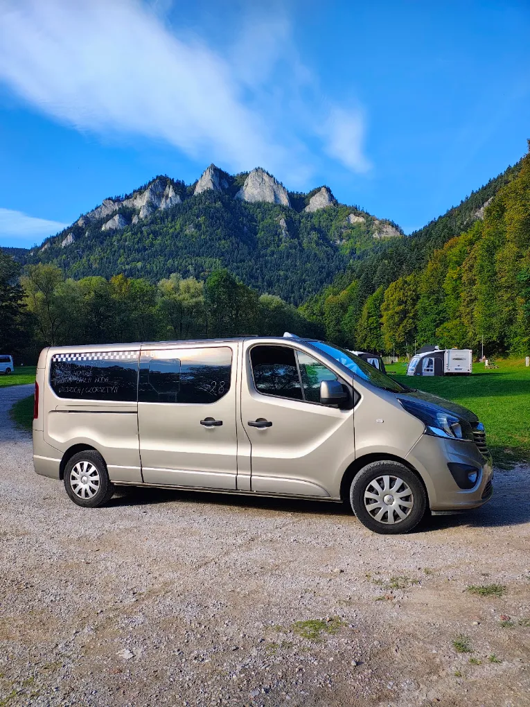
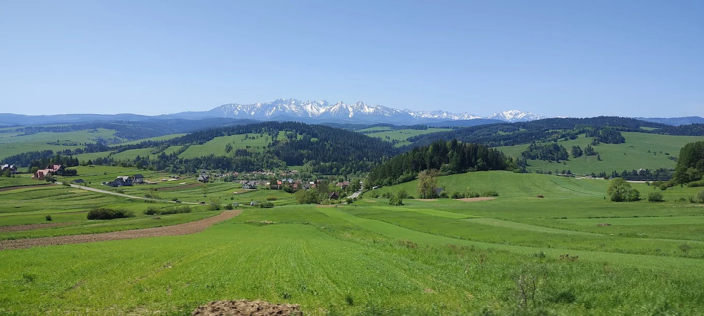
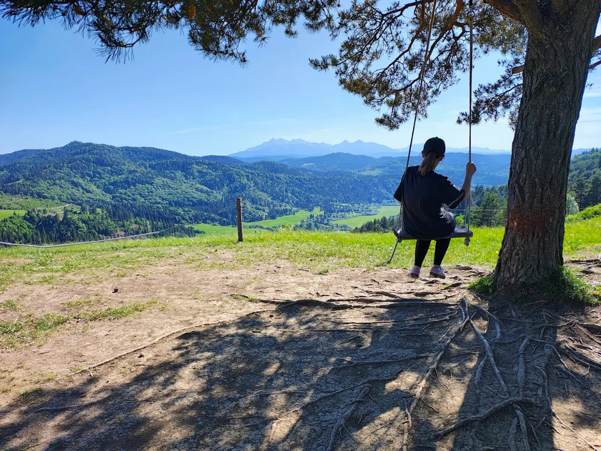
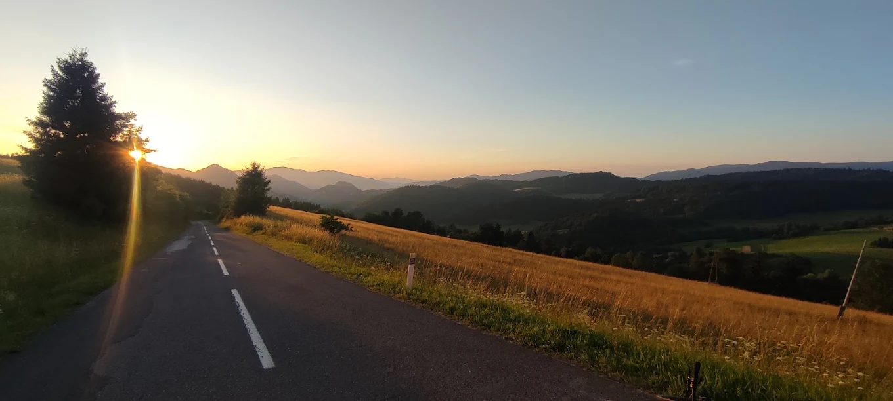
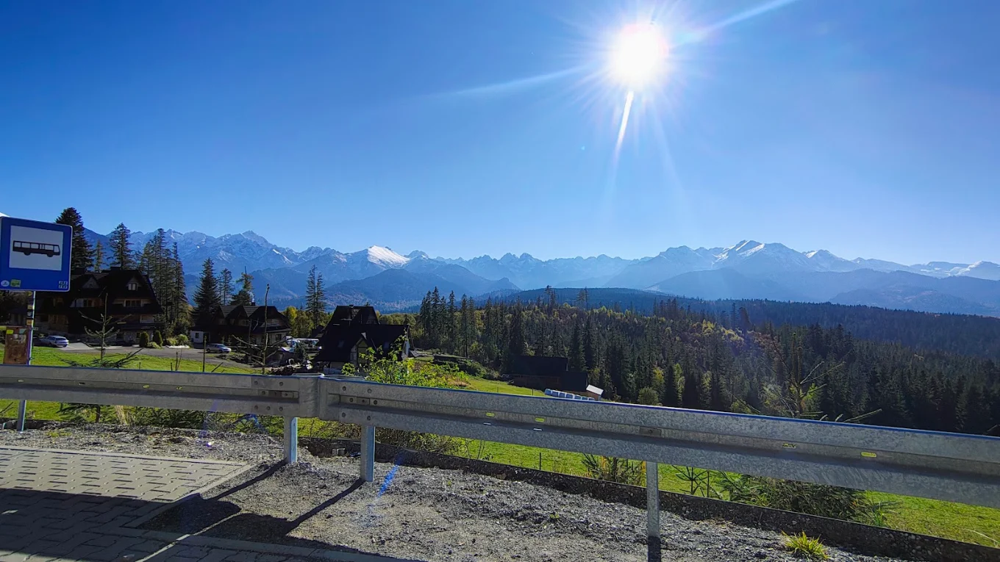

Taxi i przejazdy
Szczawnica, Jaworki, Szlachtowa, Krościenko i okolice. Także trasy krajowe i międzynarodowe.
SZCZAWNICA • PIENINY • CAŁA POLSKA • ZAGRANICA
Jaworki, Szlachtowa, spływ Dunajcem, Wąwóz Homole i dojazd pod Trzy Korony. Przejazdy lokalne, transfery lotniskowe i przewozy grupowe.
☎ Zadzwoń: 608 371 057NASZE USŁUGI
Szczawnica, Jaworki, Szlachtowa, Krościenko i okolice. Także trasy krajowe i międzynarodowe.
Transfery na lotniska, odbiory po przylocie, dowozy na szlaki i do atrakcji Pienin.
Dojazdy w rejon Durbaszki i Bereśnika, wyłącznie tam, gdzie przejazd jest dozwolony.
Samochody osobowe, terenowe i vany. Większe busy oraz autobusy organizujemy na zamówienie.
ODKRYWAJ REGION
Trzy Korony · Spływ Dunajcem · Wąwóz Homole · Jezioro Czorsztyńskie · Zamek w Niedzicy · Palenica
Ustal dojazd →POPULARNE TRASY
Wybierz usługę i sprawdź możliwości dowozu oraz odbioru. Na szlaki górskie dowozimy wyłącznie do miejsc dostępnych samochodem.
Taxi Szczawnica, Jaworki, Szlachtowa i Krościenko. Lokalne przejazdy, przewóz osób i transport grupowy. Zadzwoń: 608 371 057.
Sprawdź trasę →Dowóz na spływ Dunajcem, transport do przystani flisackich i powrót po spływie. Taxi Szczawnica–Sromowce. Tel. 608 371 057.
Sprawdź trasę →Transport pod Wąwóz Homole, na szlaki Trzech Koron i Sokolicy. Dowóz turystów w Pieninach. Taxi 608 371 057.
Sprawdź trasę →Transfery lotniskowe Szczawnica–Kraków Balice, przewóz osób i grup, vany oraz większe pojazdy na zamówienie. 608 371 057.
Sprawdź trasę →PRAKTYCZNE INFORMACJE
Tak, można zamówić przejazd między Szczawnicą, Jaworkami, Szlachtową i okolicznymi miejscowościami. Termin i miejsce odbioru uzgadniamy telefonicznie.
Tak, ustalamy dowóz do dostępnego samochodem punktu rozpoczęcia spływu oraz odbiór po jego zakończeniu. Podaj przystań, godzinę i liczbę pasażerów.
Możemy dowieźć w pobliże wejścia do Wąwozu Homole w Jaworkach lub do dostępnych drogą punktów rozpoczęcia szlaków na Trzy Korony i Sokolicę. Na szczyty prowadzą trasy piesze.
Tak, zapytaj o przejazd ze Szczawnicy na lotnisko Kraków-Balice lub odbiór po przylocie. Podaj termin, liczbę osób i bagaży.
Zadzwoń pod numer 608 371 057 i podaj miejsce odbioru, cel przejazdu, termin oraz liczbę pasażerów.
GALERIA
Zdjęcia samochodów i widoków z regionu Pienin.





Podaj trasę, termin i liczbę pasażerów. Ustalimy szczegóły przez telefon.
☎ 608 371 057